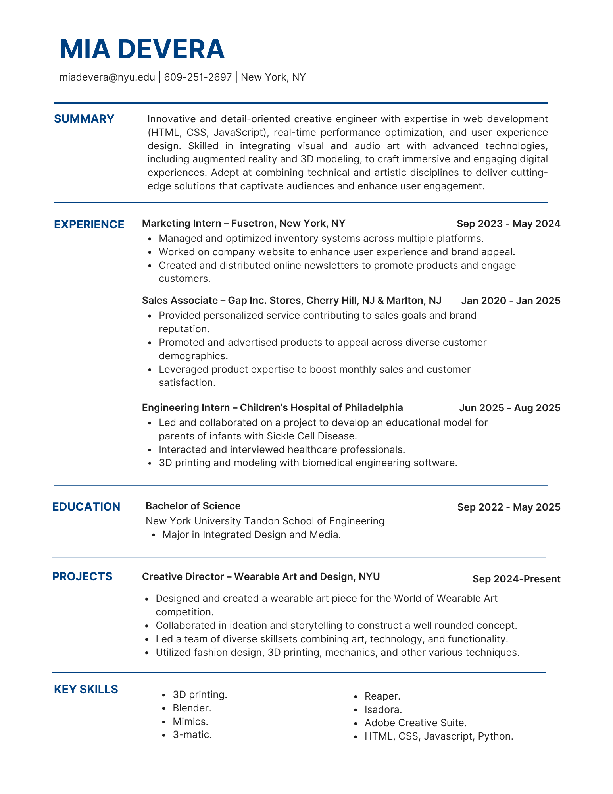

.jpeg)
About Me
Hi, I'm Mia DeVera, a senior at NYU Tandon School of Engineering, majoring in Integrated Design and Media. I've always been drawn to the space where art meets science. A space that has been unfamiliar to me in the past and can forever continue to allow me to learn. Where an idea can be transformed into something that can be widely experienced.
Over the past two years, I've explored that intersection of both art and engineering through fashion. As part of NYU's Wearable Art and Design VIP program, this most recent year I took on the role as one of the Creative Directors and team leads, working with peers of all different artistic and technical backgrounds. The project my team is working on is titled Maneater, which is inspired by my cultural background and topics that drive my art. I spend my time choreographing decisions and guiding the design of mixed-media, tech-driven wearable pieces. It's where I learned how collaboration, storytelling, and technology can merge to create something that I can bring to life.
Last summer, I interned with the CHAMP Lab at the Children's Hospital of Philadelphia, where I collaborated with interns from different programs to develop an educational model for sickle cell disease in infants. Using 3D printing, silicone modeling, and digital design tools, we translated complex medical concepts into something tangible and easy to understand for parents of children with sickle cell disease. My time and experience working in this environment reshaped the way I think about impact-driven design.
My repertoire is an ever-growing mix of programs and materials: 3D printing, Blender, Mimics 3-matic, Reaper, Isadora, Adobe Creative Suite, HTML, CSS, JavaScript, and Python. But I'm just as passionate about the side of creativity I can experience without technology. I love printmaking, reading, writing, music, and concerts, and I find inspiration in the rhythm and chaos of those worlds. I try my best to incorporate my skills and interests in both my academic and personal life.
At the core of everything I make is curiosity. I thrive on the need to experiment, to build, and to bring stories to life through art, technology, science, and everything in between.
Let's Connect
Want to collaborate or learn more about my work? Check out my resume and connect with me on LinkedIn. I'm always excited to discuss new projects, creative ideas, and opportunities in design and technology.
Visit My LinkedIn →